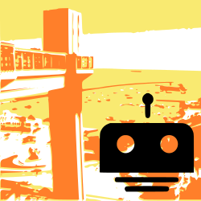
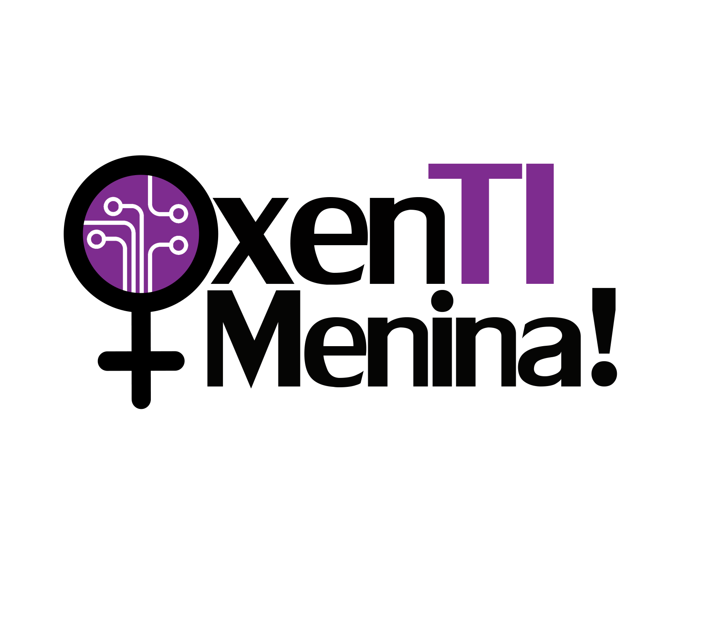

Sobre
Regularmente a comunidade NodeBots realiza eventos e encontros ao redor do mundo, onde as pessoas se encontram para fazer coisas incríveis juntas, usando JavaScript e microcontroladores como Arduino, Raspberry Pi, NodeCopters, robôs e outros dispositivos.
Se você não tem idéia de como começar ou usar um LED, não tenha medo. Convidamos as pessoas certas para facilitar o seu aprendizado no NodeBots Day e fazer sua experiência, seja o primeiro contato com JavaScript ou com Arduino, uma experiẽncia divertida.
Este evento é tanto para iniciantes quanto pessoas curiosas ou que já saibam sobre eletrônica ou JavaScript.
Local
Av. Sete de Setembro, 3959. Salvador, Bahia
Palestrantes
-

10h00 Boas vindas da equipe NodeBots Salvador
NodeBots Salvador @nodebotsalvador
-

10h30 Oficina de Introdução a Eletrônica com Arduíno
Clara Matos Site
O OxenTI Menina é um grupo formado por meninas entusiastas e apaixonadas pela fomentação da Tecnologia e Empreendedorismo.
-
11h30 Node.JS - Do 'gugudada' ao 'Tá rodando, pai'
Mateus Malaquias @mmalaquiasdev
Desenvolvedor de APIs na PRODEB, RESTafarian, apaixonado por comunidades, sou organizador das comunidades JavaBahia e FreeCodeCamp Salvador, além de ser um membro ativo da comunidade SouJava, já participei de pesquisas na área de Bioinformática e atualmente tenho me envolvido cada vez mais com JavaScript organizações de eventos, palestras, YouTube e blogs.
-
14h00 Explore o mundo IoT com o Matrix
Diego Leite @di3goleite
Apaixonado por software livre, em especial JavaScript. Graduando em Engenharia de Computação pela UEFS. Trabalha no time de processamento de imagens de uma startup de Miami chamada AdMobilize. Desenvolvedor Node.js em uma startup de Feira de Santana chamada Tamse.
-
15h00 JavaScript on Things
Rodolfo Silva @Ro_dolfoSilva
Desenvolvedor Web desde os 13 anos, atualmente trabalha com PHP, Ionic, Angular e AngularJS. Apaixonado por JavaScript e Python, nas horas vagas programa e se diverte com Arduino, mas curte mesmo é brincar com a Isabelle.
Programação
Confira a programação da 1ª Edição do NodeBots Day Salvador
| Horário | Atividade | Descrição |
|---|---|---|
| 10h00 | Check-in | - |
| 10h00 |
|
Apresentação da proposta do evento, atividades do dia e planos futuros. |
| 10h30 |
|
Antes de programar os Nodebots, você precisa entender sobre eletrônica e Arduíno. Esta oficina prática fala do básico necessário para você iniciar seus experimentos. |
| 11h30 |
|
Interessado em Node.js? Mas não sabe por onde começar? Como funciona? Escala? Quais empresas apoiando o projeto? É difícil? Onde posso aprender? Nesta palestra vamos entender melhor sobre tudo isso e um pouco mais, vamos sair do zero ao minimo que precisamos ter para rodar uma API em produção. |
| 12h30 | Pausa para o lanche | - |
| 14h00 |
|
Você já tentou desevolver algo para IoT e teve que procurar o sensor certo para resolver o seu problema? Além de tudo, você já teve que aprender algum tipo de linguagem baixo nível para dar vida a sua ideia? Então, nessa talk venha conhecer o projeto MATRIX. Com ele, é possível prototipar a sua solução de internet das coisas e tornar o seu sonho realidade. |
| 15h00 |
|
Você já deve ter ouvido que JavaScript roda em qualquer coisa, não? E já ouviu sobre JavaScript além da Web? Pois é. O Johnny-Five é um framework que permite isso. Ele suporta várias plataformas como Arduino, Raspberry Pi, Intel Galileo. Bateu a curiosidade? Então, se prepare para conhecer algumas das possibilidades para Robótica e IoT com o Johnny-Five. |
| 16h00 | Encerramento | - |
Parceiros
Realização
Código de Conduta
Seguimos um código de conduta emprestado do Django Girls.
Não toleramos qualquer quebra ou atitude que faça alguém se sentir desconfortável.